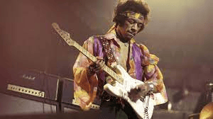
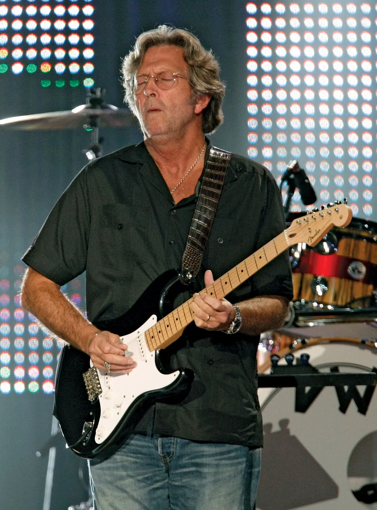
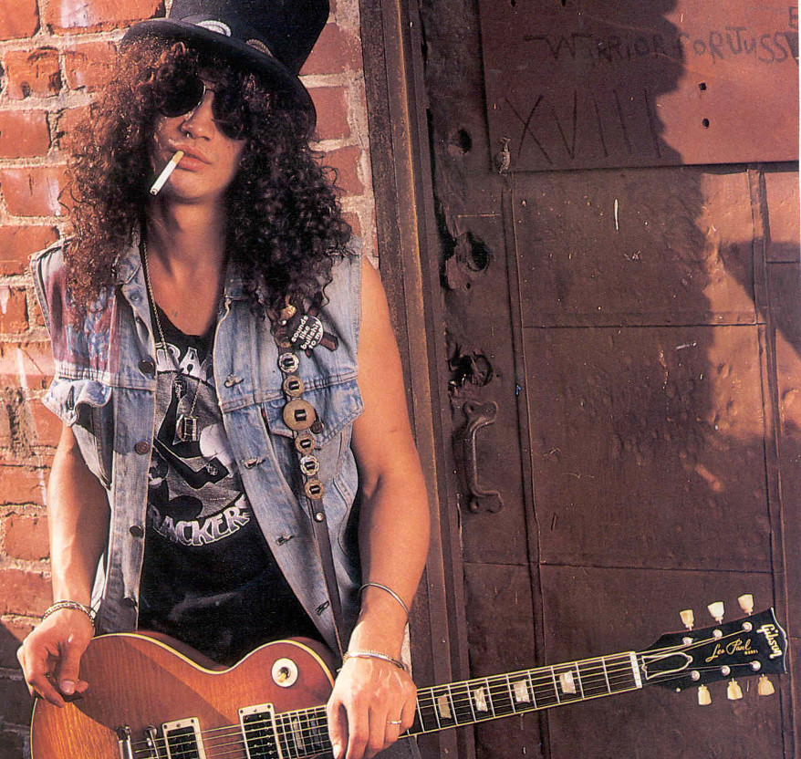
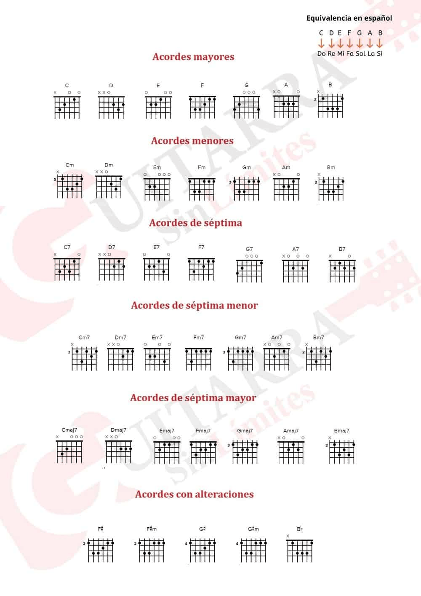
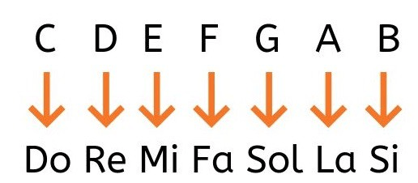
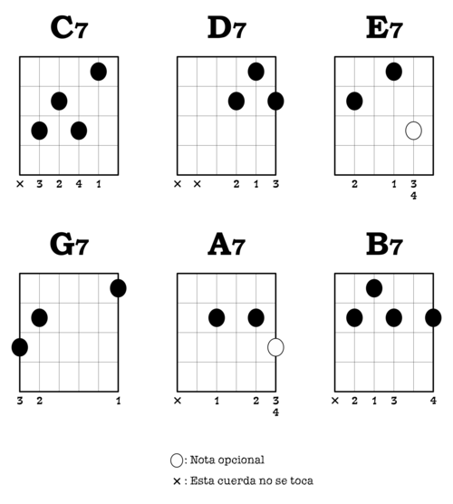

(James Marshall Hendrix; Seattle, Estados Unidos, 1942 - Londres, 1970) Guitarrista estadounidense de rock. Según la discografía oficial, tiene unos veinte discos editados, si bien tan sólo publicó tres en vida: Are you Experienced? (1967), Bold as Love (1967) y Electric Ladyland (1968). Sin embargo, su genio y originalidad han perdurado de tal modo que medio siglo después de su fallecimiento sigue siendo el referente principal de los grandes guitarristas. Desarrolló la técnica y los efectos de la guitarra eléctrica hasta dotarla de una entidad propia, mediante la saturación de sonido en los amplificadores y el uso del pedal wah-wah para generar efectos sonoros.
Eric Clapton, a quien sus fans llaman «God», es hoy en día el guitarrista de rock y blues más famoso del mundo. Sigue todavía activo, tras 50 años encima de los escenarios. Este británico ha ido evolucionando dentro de los estilos que acabamos de mencionar, el blues y el rock. Es un gran solista y un melodista de renombre; básicamente, sabe hacer de todo.
Saul Hudson, más conocido como Slash, es uno de los músicos más icónicos de todos los tiempos. Saltó a la fama como guitarrista principal de la banda de hard rock Guns N’ Roses y lleva décadas cautivando a fans de todo el mundo. Desde sus icónicos solos en algunas de las canciones más conocidas de Guns N’ Roses, hasta su trabajo en otras bandas como Velvet Revolver, Slash’s Snakepit y Slash’s Blue Ball, Slash ha demostrado una y otra vez que es un maestro de su oficio. En este artículo, echaremos un vistazo a la técnica de guitarra de Slash y a su historia.
(Kurt Donald Cobain; Aberdeen, 1967 - Seattle, 1994) Compositor y cantante de rock estadounidense. Fue el fundador y principal miembro de Nirvana, mítica banda cuya breve trayectoria se halla indisolublemente unida al surgimiento del grunge a principios de los años 90.
En música y teoría musical, un acorde consiste en un conjunto de dos o más notas diferentes y que constituyen una unidad armónica. En determinados contextos, un acorde también puede ser percibido como tal aunque no suenen todas sus notas.
Los acordes basicos se dividen en acordes mayores, menores y de séptima de dominante.
Acordes de guitarra mayoresEl acorde mayor tiene un sonido consonante y brillante. Este acorde consta de tres notas que la fundamental, la tercera y la quinta. Si tiene estas tres notas se le llama acorde triada.
Estos acordes de guitarra, junto con los acordes menores, son los acordes más básicos y a la vez más importantes dentro de la guitarra.Ambos acordes se suelen clasificar con los nombres de las notas (Do, Re, Mi, Fa, Sol, La, si) o con la notación anglosajona (C, D, E, F, G, A, B)
Un acorde menor consiste en tres notas: La raíz o tónica, la tercera menor y la quinta. Entonces el acorde Do menor no estará conformado por Do, Mi y Sol como el Acorde Mayor, sino por Do, Mi bemol y Sol. Esa pequeña diferencia es lo que lo caracteriza como un acorde menor.

El acorde tétrada de séptima es el acorde rey dentro del jazz, a partir del cuál se pueden agregar infinidad de notas de color que se consideran extensiones (sextas, novenas, trecenas...) o tensiones (cuando se trata de notas alteradas que no pertenecen a la tonalidad).
 Sonidos y efectos